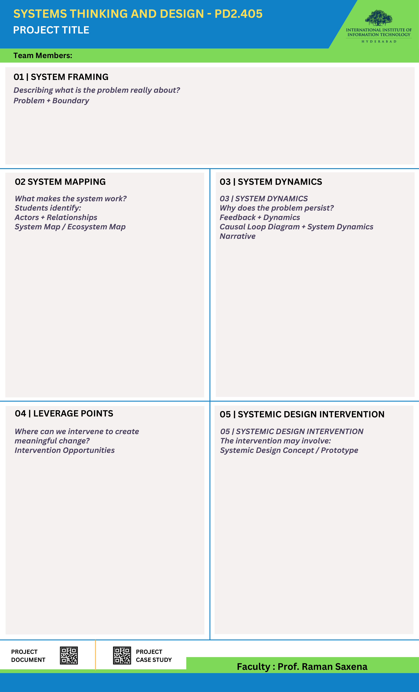

Describing what the problem is really about · Problem + Boundary
Two research labs share one floor: ~100 students, 84 desks, GPUs, 12 lockers, 2 meeting rooms, one fridge, coffee machine and microwave. Students reported occupied-looking empty desks, GPU contention and food waste, yet also cooperative borrowing.
Reframed problem: Shared resources in SERC are not only constrained by limited capacity; they are made harder to access by fragmented ownership, fragmented visibility, unwritten rules and dependence on informal negotiation. A resource can be physically available but still remain effectively unavailable.
Empty ≠ available.
We found a readability problem sitting on top of a capacity problem. Peak-time shortage is real, but newcomers also cannot tell what is free, who holds it, or whom to ask.
What makes the system work? · Actors + Relationships · System Map
| Seniors / incumbents | Hold desks and GPU slots; names and belongings act as claims; grant permission informally. |
| Juniors / newcomers | Must ask to use what looks free; hesitate at desks they were never refused. |
| Faculty | Control funding and permissions; allocation follows who paid. Act quickly when reached, but small issues rarely reach them. |
| Student POCs / GPU manager | Keep the SERC tracker; act as informal resource managers and brokers. |
| Admin, supervisor & cleaners | Room booking, procurement, upkeep, Saturday fridge clear. Report shortages up the chain but never decide eligibility. |
No single floor-wide allocation process: only local arrangements held together by courtesy.
Why does it persist? · Feedback + Dynamics · CLD + Narrative
Stronger claims shrink newcomer availability → unmet demand rises → pressure to secure a personal desk grows → over time, claims strengthen further.
Sharing frees desks only when the holder is absent, reachable and willing, and the requester feels able to ask. A junior's hesitation weakens it.
Delays hide the loop: absence → desk release, GPU reservation → actual use, minor problem → formal awareness. Because status is unreadable (SERC tracker, Precog Slack, names on desks: all separate), every check becomes a person-to-person query. Problems surface late, so correction is blunt, e.g. coffee access withdrawn from all students, and the shared benefit is lost. Underneath sit mental models: “a desk someone regularly uses is effectively theirs.”
Where can we intervene to create meaningful change? · Intervention Opportunities
Highest practical leverage now. You cannot enforce a rule no one can see: visibility (LP3) enables fair rules (LP4), which enable a self-correcting review (LP5).
Goal shift (LP6): from “protect what my group funded” to “use idle capacity, with attribution”. Not “remove ownership”.
Systemic Design Concept: one system, five parts (not an app)
| M2 status unreadable | 1 Claim Signals | Free capacity reads as free; fewer manual checks. |
| M1 claims persist | 2 Default-Decay | Claims track actual use; less defensive reserving. |
| M3 access runs on asking | 4 Stewards + ladder | Asking becomes cheaper and less personal. |
| M4 blunt correction | 3 Proportionate Care | Misuse controlled; amenities stay open to all. |
| M5 history-based allocation | 5 Termly Review | Allocation adapts to use before crises. |
Kept as is: ask-first norm · faculty authority · equipment attribution · GPU quotas. Proposed design, low-tech (paper cards, existing GPU page, a shared sheet). Effects predicted, not yet measured.